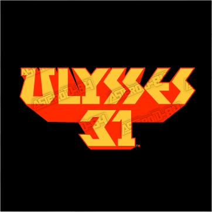

Ulysses 31
Ulysses 31 is a joint project by animation studios in France, Japan, and Luxembourg to bring the legend of Ulysses and his adventure in the Odyssey into the 31st century with a sci-fi twist.
Original Release: Oct 3, 1981
Episode Total: 26
Studio: DiC Audiovisuel, Tokyo Movie Shinsha, France 3, RTL

Primary Cartoon Logo - 1980

Alternate Logo - 1980

Image Caption 3